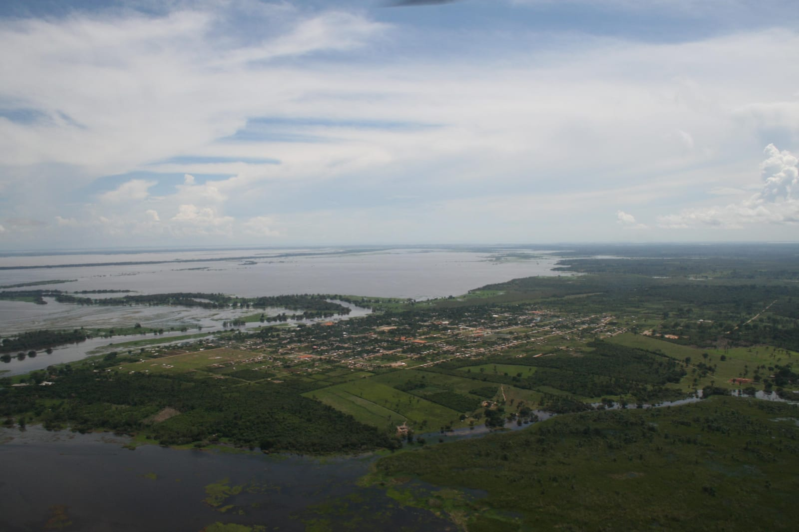
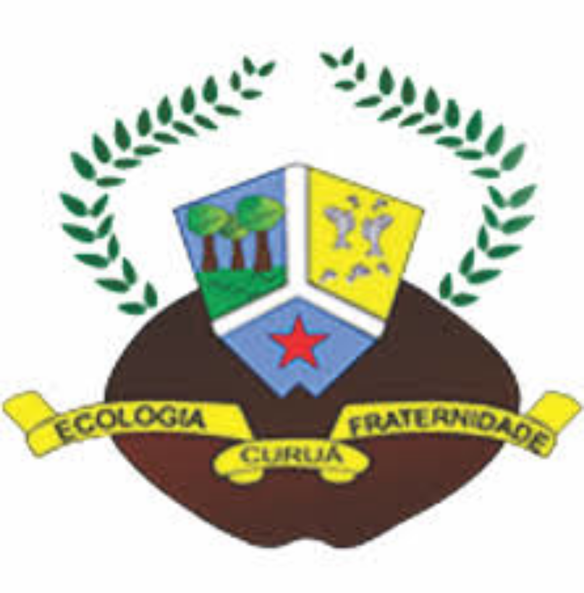

Curuá na Atualidade



A história da região que hoje corresponde ao município de Curuá remonta ao final do século XVII, quando missionários franciscanos capuchos iniciaram o processo de ocupação religiosa e territorial no Baixo Amazonas.
Em 1694 foi fundada a Missão Baré, destinada à catequese e organização de grupos indígenas na região. A missão representava não apenas um centro religioso, mas também uma estratégia de consolidação territorial da Coroa Portuguesa na Amazônia.
Com o passar dos anos, a missão foi transferida para a aldeia Surubim, em Alenquer, e parte da população foi deslocada para a aldeia de Pauxis, em Óbidos. Esses deslocamentos faziam parte da política colonial de reorganização indígena e centralização administrativa.
Nesse período, o território era predominantemente indígena, marcado por relações entre missionários, autoridades coloniais e populações nativas. A presença religiosa estabeleceu as primeiras bases organizadas de ocupação na região que futuramente daria origem à vila de Curuá.
Assim, o período missionário pode ser considerado o marco inicial da formação territorial, ainda que não houvesse naquele momento uma vila estruturada. Tratava-se de um espaço em transformação, onde fé, política e estratégia colonial moldavam o futuro da região.

